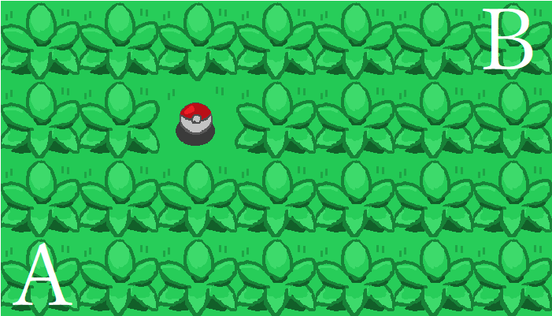
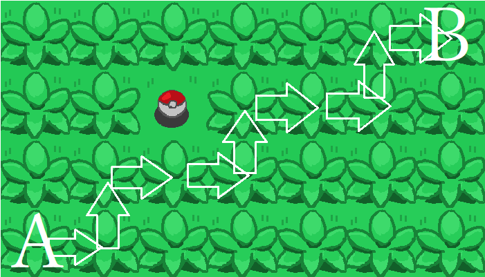

ポケモンに学ぶ数学① ～場合の数と確率～
こんにちは。皆さんは数学は好きでしょうか。数学、なかでも確率は苦手な人が多いのではないでしょうか。
今回はそんな人のために、皆さんの大好きなポケモンを題材に問題を作ったので解説します。全6問用意したので解いてみてください。
第1問
手持ち6匹の中から、戦闘に使う3匹のポケモンの決め方は何通りあるか。ただし、先頭と手持ちのポケモンは区別するものとする。(先頭A 手持ちB,C と 先頭B 手持ちA,C は違うものとする)
解説
第1問に相応しい問題ですね。弊校では2年の前期でやった気がします。6個の物の中から3個を選ぶ選び方だからと言って安直に
としてはあきまへん。まず先頭に出すポケモンを6匹の中から1匹選び、そのあとで残りのポケモンを5匹の中から2匹選びましょう。したがって
よって答えは60通りになります。
<別解>
6個のポケモンの中から3個を選び、その中から先頭に出すポケモン1匹を選べばいいので、20*3=60(通り)としても良いですね。安直とか言ってごめんなさい。
ポケモンは選出が難しいと思っていたけれど、60パターンの中から最適な組み合わせを選ぶ必要があったんですねェェ。
第2問
サファリパークの一部を図1に示す。以下の問に答えよ
(1)AからBへの最短経路の個数を求めよ
(2)Aからどうぐを拾ってBまで行く最短経路の個数を求めよ。ただし、どうぐが落ちているマスに入ることでどうぐを拾えることとする。

解説
(1)図2の例を見れば分かるように、1つの「最短経路」に対し、「→6個と↑3個の並べ方」が一対一対応する。すなわち、図2の行き方は「→↑→→↑→→↑→」のただ一つで表され、逆に「→↑→→↑→→↑→」の並べ方は、図2の行き方のみに定まる。

よって、「最短経路」の代わりに「矢印の並べ方」を考えればよい
「→6個と↑3個の並べ方」は、9回の移動の中から、3回の北(上)に移動する箇所を選べばよいので、
したがって答えは84個となる。
(2)(1)と同様に考えて、
「Aからどうぐへの最短距離」と「→2個、↑2個の並べ方」、「どうぐからBへの最短距離」と「→4個、↑1個の並べ方」
はそれぞれ一対一対応であるから、求める場合の数は、
より30個。
余計にくさむらに入ってしまうとやせいのポケモンがあらわれてめんどくさいですね。
第3問
麻痺状態のポケモンについて以下の問に答えよ。ただし麻痺状態になると1/4の確率で行動できなくなるとし、以下その現象を麻痺バグと呼ぶ。
(1)3ターン連続で麻痺バグが起こる確率を求めよ。
(2)4ターン目にちょうど2回目の麻痺バグが起こる確率を求めよ。
解説
(1)各ターンでの麻痺バグの起こりやすさは無関係であるから
( 1 4 )3 = 1 64
よって求める確率は 1 64 である。
(2)3ターン目までに1回だけ麻痺バグが起こり(他2回はバグらない、すなわち1/4を1回、3/4を2回引く)、4ターン目に麻痺バグが起こる確率を考える。はじめの3ターンの中からバグる1回を選ぶ選び方は3通り。その各々の確率は、
1 4 ⋅ ( 3 4 )2 = 9 64
であるから、求める確率は
3 ⋅ 9 64 ⋅ 1 4 = 27 256
である。
今日は寝ますおやすみ。